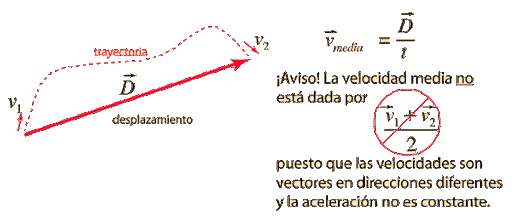

INFORMACION SOBRE EL TEMA
Bienvenido a la sección de información, aquí podrás hacer una retro alimentación del tema propuesto en el juego y además si deseas profundizar mas el tema, puedes aprender con la siguiente información:
¿QUE ES LA VELOCIDAD?
La velocidad es una magnitud que nos permite saber la rapidez con la que va un objeto en movimiento, este vector depende por el espacio recorrido (distancia) en una cierta unidad de tiempo. la velocidad hace parte de una de las formulas del Movimiento Rectilinio Uniforme, se representa como v, su formula es: D/T, donde D, significa la distancia o el espacio recorrido y T el tiempo y se expresa en m/s
Tipos de Velocidad Movimiento Rectilinio Uniforme
Entre los tipos de Velocidad hallados en el Movimiento Rectilinio Uniforme encontramos los siguientes:
Velocidad: Es el tipo de Velocidad Mencionado anteriormente.
.jpg)
Velocidad Media: Es el promedio de las velocidad en distintos tramos del movimiento de un cuerpo.
 Velocidad Instantánea: Es la velocidad de un objeto en un cierto intervalo de tiempo.
.jpg)
WebGrafia
Información Basada en: Fisicalab Velocidad